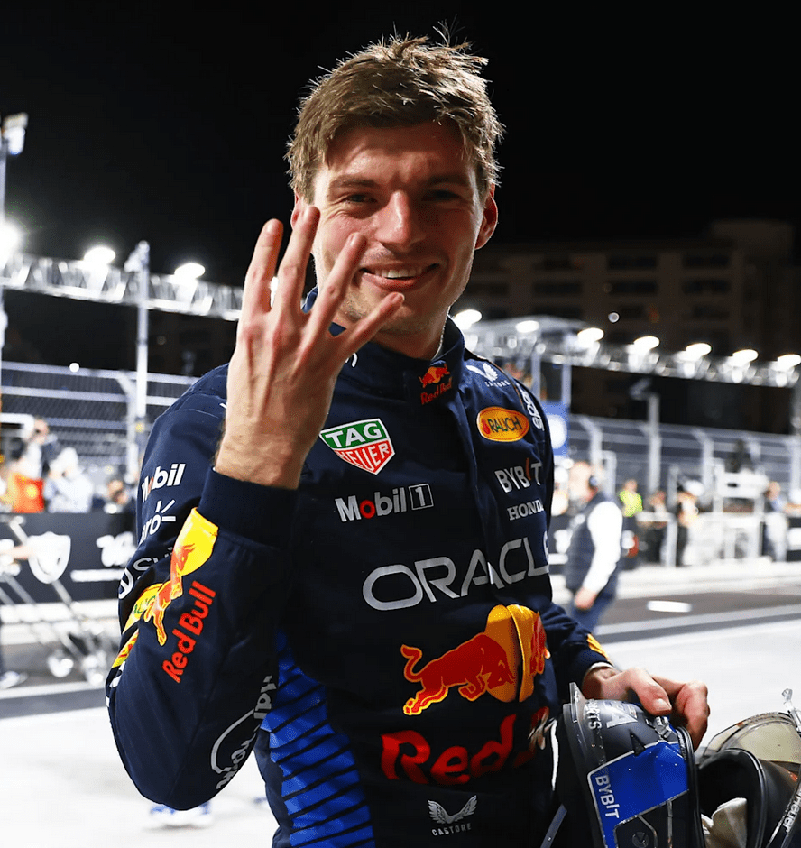

Classements de la saison 2024 de Formule 1
Classement des Pilotes
| Position |
Pilote |
Points |
| 1er | Max Verstappen | 437 |
| 2è | Lando Norris | 374 |
| 3è | Charles Leclerc | 356 |
| 4è | Oscar Piastri | 292 |
| 5è | Carlos Sainz | 290 |
| 6è | George Russell | 245 |
| 7è | Lewis Hamilton | 223 |
| 8è | Sergio Pérez | 152 |
| 9è | Fernando Alonso | 70 |
| 10è | Pierre Gasly | 42 |
| 11è | Nico Hülkenberg | 41 |
| 12è | Yuki Tsunoda | 30 |
| 13è | Lance Stroll | 24 |
| 14è | Esteban Ocon | 23 |
| 15è | Kevin Magnussen | 16 |
| 16è | Alexander Albon | 12 |
| 17è | Daniel Ricciardo | 12 |
| 18è | Oliver Bearman | 7 |
| 19è | Franco Colapinto | 5 |
| 20è | Zhou Guanyu | 4 |
| 21è | Liam Lawson | 4 |
| 22è | Valtteri Bottas | 0 |
| 23è | Logan Sargeant | 0 |
| 24è | Jack Doohan | 0 |

Classement des Constructeurs
| Position |
Constructeur |
Points |
| 1er | McLaren | 666 |
| 2è | Ferrari | 652 |
| 3è | Red Bull Racing | 589 |
| 4è | Mercedes | 468 |
| 5è | Aston Martin | 94 |
| 6è | Alpine | 65 |
| 7è | Haas | 58 |
| 8è | RB | 46 |
| 9è | Williams | 17 |
| 10è | Kick Sauber | 4 |